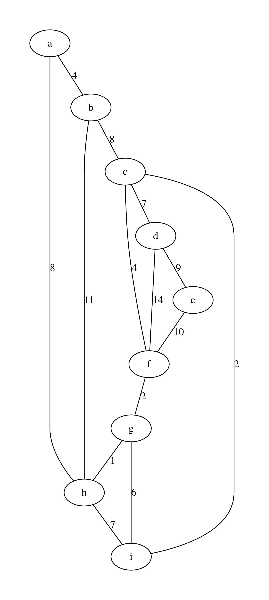
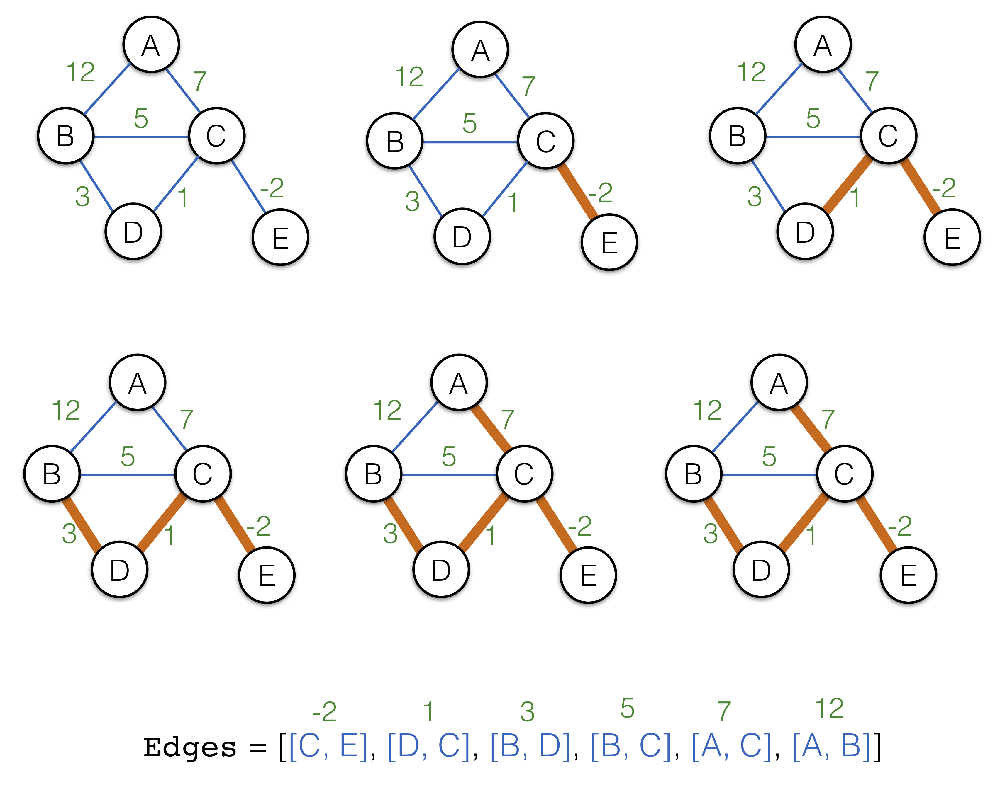

13.3. Minimal Spanning Trees¶
https://github.com/ilyasergey/ysc2229-part-two/blob/master/lib/week_13_Spanning.ml
So far we have only looked at directed graphs, where each edge, besides the pair of connected nodes, also identified a direction. It is uncommon, however, to consider undirected graphs, where each edge establishes a symmetric link between two nodes.
13.3.1. Representing Undirected Graphs¶
Undirected graphs can be encoded in the same way as directed ones, using the same data structures with either
- certain amount of duplication, i.e., for each edge
(u, v)ensuring that(v, u)is also prsent, or - some elaborate conventions in how the the topology is treated. For instance, when considering only successors for a directed graph, one should consider also predesessors.
If the second way is adopted (this is what we are going to do), then one also needs to ensure that only one edge out of (u, v) or (v, u) is present. The standard practice is to store the edge that is smaller lexicographically.
For instance, consider the following weighted undirected graph:
let undirected_example_nodes =
[|"a"; "b"; "c"; "d"; "e"; "f"; "g"; "h"; "i"|]
let undirected_example_edges =
[(0, 1); (0, 7); (1, 2); (1, 7); (2, 3); (2, 5); (2, 8); (3, 4);
(3, 5); (4, 5); (5, 6); (6, 7); (6, 8); (7, 8)]
let undirected_example_labels =
[(0, 1, 4); (0, 7, 8); (1, 2, 8); (1, 7, 11); (2, 3, 7); (2, 5, 4); (2, 8, 2);
(3, 4, 9); (3, 5, 14); (4, 5, 10); (5, 6, 2); (6, 7, 1); (6, 8, 6); (7, 8, 7)]
let example_graph_undirected =
read_graph_and_payloads 9 undirected_example_nodes
undirected_example_edges undirected_example_labels
We can render it via the following procedure:
let graphviz_with_weights_undirected g out =
let open Week_10_ReadingFiles in
let open AdjacencyGraphs in
let ag = LinkedGraphs.to_adjacency_graph g in
let vattrib = get_ag_node_payload ag in
let eattrib (s, d) =
let l = get_ag_edge_label ag s d |> string_of_int in
Printf.sprintf "[label=\"%s\", weight=\"%s\"]" l l
in
let s = graphviz_string_of_graph "graph" " -- "
vattrib eattrib ag in
write_string_to_file out s
obtaining this beautiful plot:
{kind=link}
13.3.2. Trees in Undirected Connected Graphs¶
Fully connected undirected graph (i.e., graphs in which each node is reachable from another) are frequently used describe network topologies or electronic circuit layout. It is sometime convenient to find the minimal connected graph \(G'\) that spans the entire set \(G.V\) of nodes of the “main” graph \(G\), while covering only a subset of the edges from \(G.E\).
This sub-graph turns out to be a tree, and can be characterised by ether of the following definitions:
- A minimal (in terms of a number of edges) connected subgraph \(G'\) of \(G\)
- A connected subgraph \(G'\) of \(G\), such that \(G'\) has no cycles
- A connected subgraph \(G'\) of \(G\) such that \(|G'.E| = |G'.V| - 1\)
The last observation is important: tree is a very sparse graph, where the number of edges is a number of nodes minus one. However, other definitions are useful, too.
13.3.3. Minimal Spanning Trees¶
Given a weighted undirected graph \(G\), we are interested in finding its Minimal Spanning Tree (MST), which is defined as follows:
Definition (Minimal Spanning Tree)
Minimal Spanning Tree \(T\) of a graph \(G\) is a subset \(T \subseteq G.E\), such that: * All nodes \(G.V\) are connected by edges in \(T\) * The sum of the weights of edges in \(T\) is minimal (among other possible analogous subsets), and * \(T\) has no cycles, that is, it is a tree
Minimal spanning trees find many applications in:
- Telecommunication networks design
- Electronic circuit layout
- Image segmentation
Question: For any graph, is MST always unique?
13.3.4. Kruskal’s Algorithm¶
Kruskal’s algorithm returns the result tree \(T\) as a list of edges (a corresponding undirected graph can be restored in linear time). The key step of the algorithm is sorting edges by their weight.
The algorithm relies on the Union-Find structure for disjoint sets (cf. Chapter Equivalance Classes and Union-Find).
The algorithm first sorts all edges in an ascending other according to their weights. It then progressively fetches the edges and connectes the corresponding disjoint graphs. The following progression illustrates the main procedure on a simple graph example:
{kind=link}
The listing of the algorithm is given below:
let mst_kruskal g =
let open UnionFind in
let forest = mk_UF (v_size g) in
let tree = ref [] in
let edges_sorted =
Set.elements g.edges |>
List.sort ~compare:(fun (a, b) (x, y) ->
let w1 = get_linked_edge_label g a b in
let w2 = get_linked_edge_label g x y in
if w1 < w2 then -1 else if w1 > w2 then 1 else 0) in
List.iter edges_sorted ~f:(fun (u, v) ->
let su = find forest u in
let sv = find forest v in
if su <> sv
then begin
tree := (u, v) :: !tree;
union forest u v
end);
!tree
Question: What is the complexity of the algorithm?
For our example above the algorithms results in the following output, obtained with the procedure graphviz_with_mst:
let graphviz_with_mst algo g out =
let t = algo g in
let attrib (u, v) =
let l = get_linked_edge_label g u v |> string_of_int in
let b = List.exists t
~f:(fun (x, y) -> x = u && y = v || x = v && y = u) in
if b then
Printf.sprintf "[label=\"%s\", color=red,penwidth=3.0]" l
else
Printf.sprintf "[label=\"%s\"]" l
in
let open Week_10_ReadingFiles in
let ag = LinkedGraphs.to_adjacency_graph g in
let s = graphviz_string_of_graph "graph" " -- "
(get_linked_node_payload g) attrib ag in
write_string_to_file out s
let graphviz_with_kruskal =
graphviz_with_mst mst_kruskal
{kind=link}
13.3.5. Testing MST Construction¶
The following simple tests checks one of the properties of the constructed MST:
open Week_13_Spanning
let%test "Testing MST size" =
let t = mst_kruskal example_graph_undirected in
List.length t = v_size example_graph_undirected - 1
Other properties are left for you to establish as a home exercise.
13.3.6. Other MST Algorithms¶
In the interest of time, we only mention other popular MST algorithms: